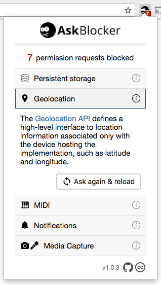
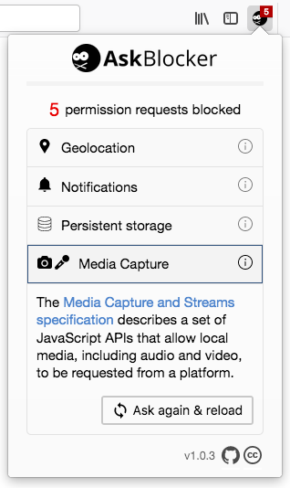

Browser extensions which block overly-eager permission requests for notifications, location, etc. For example, ones that happen before you've interacted with the page. This was created as part of How to improve your permissions UX (not published yet!).
 
Installation
How it works
Permissions requests are blocked until you've interacted with the page; i.e. click, tap, or key press. Although there are the following exceptions:
- If the permission has been previously requested and granted (or explicitly denied).
- If the domain is
localhostor127.0.0.1. - If you've navigated to the current page from another page on the same domain.
Things not covered and why
- Accelerometer, gyroscope, magnetometer, device motion, device orientation, etc. They don't trigger a permissions request popup.
- Ambient light sensor. It doesn't trigger a permissions request popup.
- Bluetooth. This can only be requested due to user interaction anyway.
- Clipboard. It doesn't trigger a permissions request popup.
- Flash. I don't know how the prompt is triggered or how I can intercept this.
- Geolocation's
watchPositionmethod. There's no way to achieve this without breaking stuff. It returns an ID and it doesn't offer any way to check the status of the permission, likeNotification.permission. The Permission API could be used but it's asynchronous (Promise based), so there's no way to use it and also still return the ID. - Web USB. Not really supported yet (and the Permission API doesn't support it yet), so it probably won't be annoying anyone.
Why aren't there extensions for other browsers?
There could be (not much of the code would have to change). Do you want to help? They wouldn't be less useful as the existing extensions though. For example, Microsoft Edge and Safari do not support the Permissions API (at the time of writing this anyway), which means permission requests for some things like geolocation can't be blocked without blocking legitimate usage.
I also couldn't quite get it to work in Firefox for Android, but I welcome any suggestions.
Contributing
Contributions are welcome. See CONTRIBUTING.md.
Licenses
The code is MIT, feel free to do whatever with it, but most of the icons are not; see src/icons/credits.md for details.